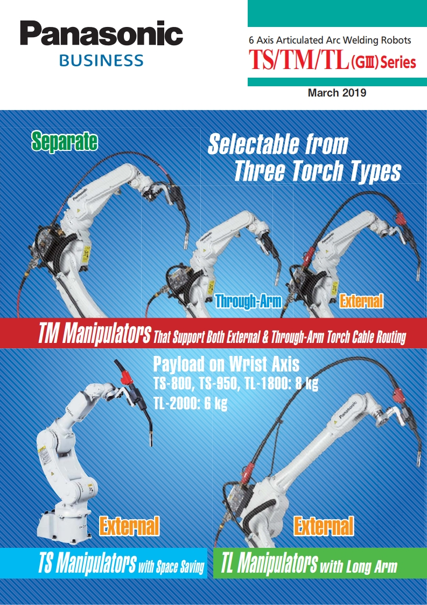

Panasonic 6축 아크 용접 로봇
토치 타입(분리형·스루암·외장형) 선택 가능. 공정에 맞춘 구성을 제공합니다.

TS / TM / TL Series GⅢ
Full Digital 용접 전원과의 결합으로 안정적이고 고품질 용접을 실현합니다. 토치 타입은 분리형(Separate), 스루암(Through-Arm), 외장형(External) 중 선택 가능하며, TM 시리즈는 애플리케이션에 맞춘 토치 타입을 선택할 수 있습니다. TS 시리즈는 공간 절약·고페이로드(8kg), TL 시리즈는 롱암·고페이로드로 대형 작업에 적합합니다.
모델 라인업 TS-800/950 · TM-1100/1400/1600/1800/2000 · TL-1800/2000
마니퓰레이터 라인업 (TS/TM/TL Series)
| 시리즈 | 모델 | 페이로드 | 토치 타입 |
|---|---|---|---|
| TS | 800, 950 | 8 kg | 스루암·외장형 |
| TM | 1100, 1400, 1600, 1800, 2000 | 6 kg (1600: 4kg) | 분리형·스루암·외장형 |
| TL | 1800, 2000 | 8 kg / 6 kg | 외장형 |

CO2 / MAG / MIG 로봇 시스템 (GⅢ)
Full Digital CO2/MAG 용접기 GZ4 시리즈와 결합한 SP-MAG(Super-imposition Control)로 스패터 감소, 고속 용접·우수한 비드 외관을 구현합니다. 스패터 최대 85% 감소(대비 350GB2). TM-1400GⅢ(Separate) 등 로봇과 연계하여 고품질 용접을 제공합니다. 350GZ4·500GZ4 등 라인업 구성.
주요 용접기 350GZ4 · 500GZ4 · 350VR1TA1 · 500VR1TA1 · 400VP1TA1

TIG 로봇 시스템 (GⅢ)
Full Digital TIG 용접 전원과 결합한 고품질 TIG 용접 시스템. 자동 TIG(무필러), 필러 TIG, 로터리 필러 TIG 등 공정에 맞춘 구성을 제공합니다. 적용 로봇: TS-800/950, TM-1100/1400, TL-1800. TIG 용접기 300BZ3·300BP4·500BP4, 토치 YT-TCT201(에어쿨링 200A) / YT-TCT401(워터쿨링 400A) 라인업.

포지셔너 및 외부축 시스템
로봇 1축 동기제어로 포지셔너 연동해 용접 접근성·효율을 향상시킵니다. 틸트로테이트 포지셔너(R 시리즈) 300kg·500kg 페이로드, 1.8배 고속화, 780×500mm 소형 풋프린트(300kg). 싱글축 250kg·500kg·1000kg. 사이드마운트 2축 RJR42/52. CO2/MAG/MIG/TIG 적용 가능, Hollow Shaft·용접 전류 500A@60% 듀티 지원.

대형·멀티 로봇 연동
대형 로봇 시리즈(GⅢ) YS-080GⅢ(80kg)·HS-220GⅢ(220kg)로 대형 물체 핸들링. WGⅢ/GⅢ 로봇과 협동 운동으로 지그 없이 유연한 시스템 구축 가능. 최대 구성: 아크 용접 로봇 2대 + 대형 로봇 1대. 3m 암 용접 로봇 HH020L은 최대 3281mm 도달로 빔 액슬 서스펜션 등 대형 용접에 적합합니다.

GⅢ 컨트롤러 · 티치펜던트
GⅢ 컨트롤러 고성능 CPU로 가동 시간 약 30초(이전 대비 50% 단축), 표준 40,000 포인트, 옵션 800,000 티칭 포인트 저장. 6축 동시 제어(최대 27축), I/O 40점(옵션 2048점 확장). 티치펜던트 경량 0.99kg, Windows 기반 조작, USB·SD 메모리, 8개 기능키로 티칭 시간 단축. 스위벨 랙·커넥터 케이블로 유지보수 용이.

생산관리 기능 · Remote TP Viewer
PC에서 로봇 동작·용접 파형을 실시간 모니터링해 용접 자세·조건 개선. Remote TP Viewer로 현장 외부에서도 TP 화면 공유. 로봇당 옵션 라이선스 필요, 1대 PC에 최대 10대 로봇 연결. WGⅡ·WGHⅡ·GⅡ 컨트롤러 소프트웨어 20.00 이상 대응. MES 연계로 생산 실적·설비 가동률 관리 가능.
주요 기능 (표준·선택)
- 위빙 기능 6가지 패턴, 시작·진폭·턴포인트·종료점만 티칭으로 교육 시간 단축
- 토치 각도 표시 티치펜던트 화면에 표시되어 비드 외관 균일화
- 오버랩(CO2/MAG) 용접 중단 시 재가동 후 정확한 종료점부터 자동 재개
- 아크 센서 위빙 용접 중 전류 변화로 용접선 이탈 보정
- 터치 센서 용접선·그루브 터치로 위치 오차 보정, 지그 비용 절감
- 용접 내비게이션(선택) 관절형·판두께 선택만으로 최적 파라미터 자동 설정
- 중후판 용접 기능 그루브 터치 센서·가변 위빙으로 그루브 폭 변화 대응